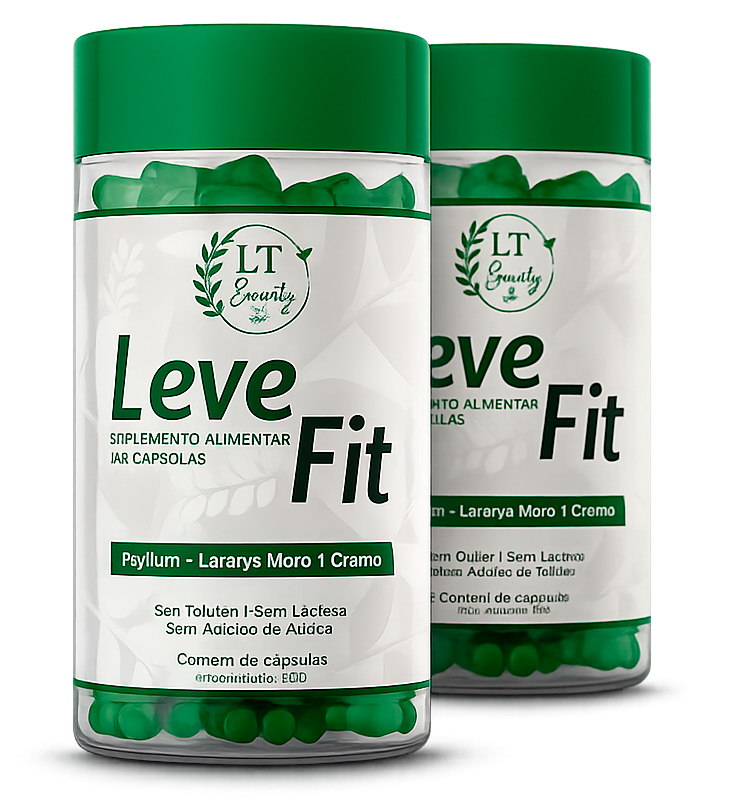
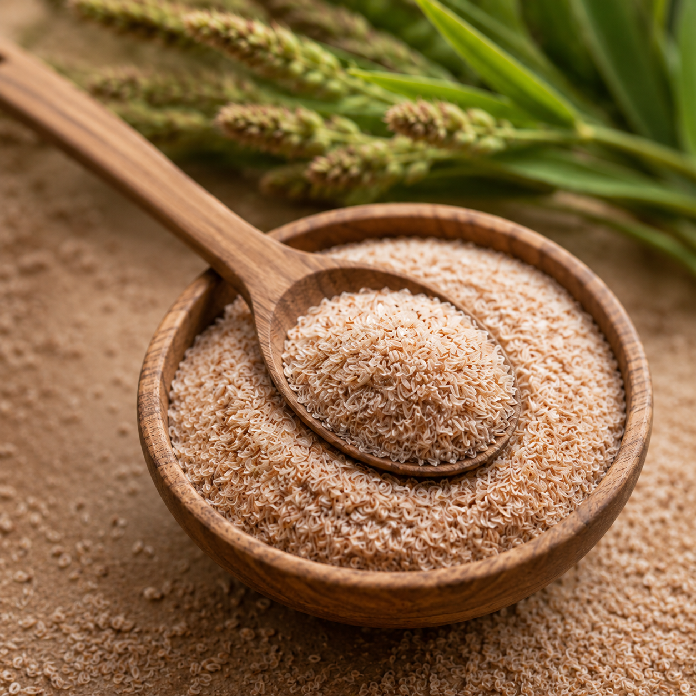
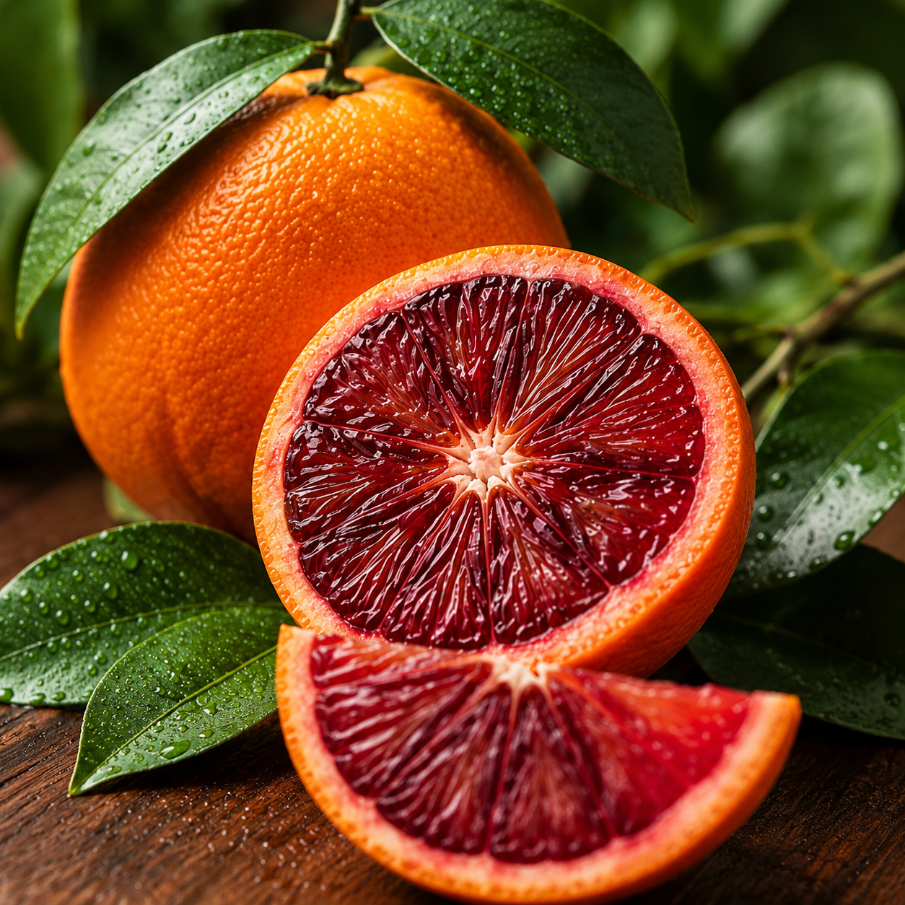
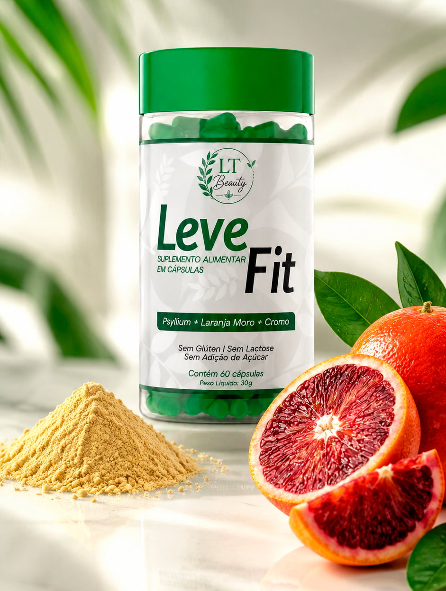
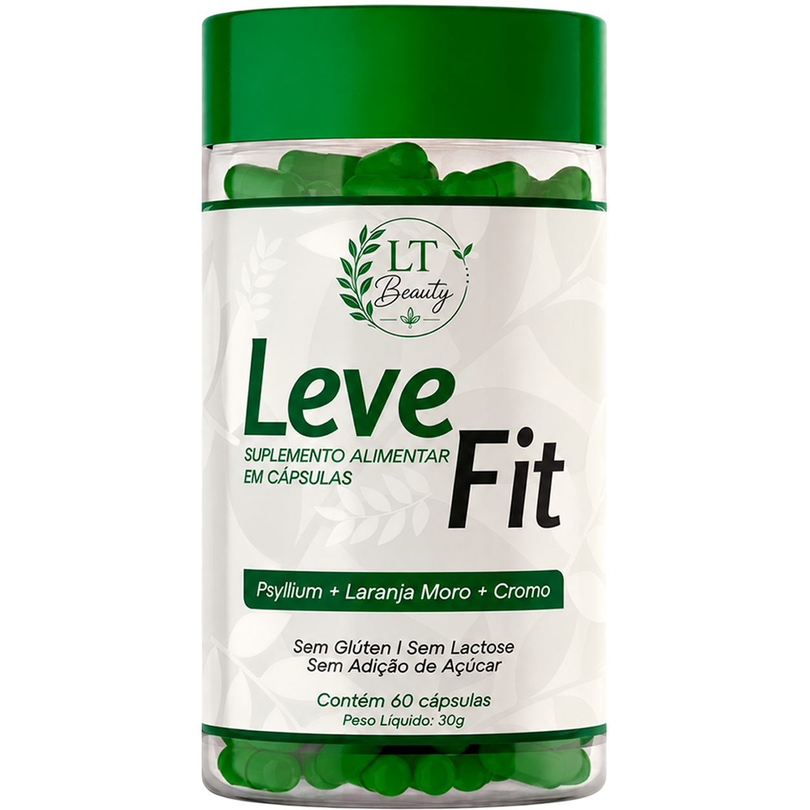
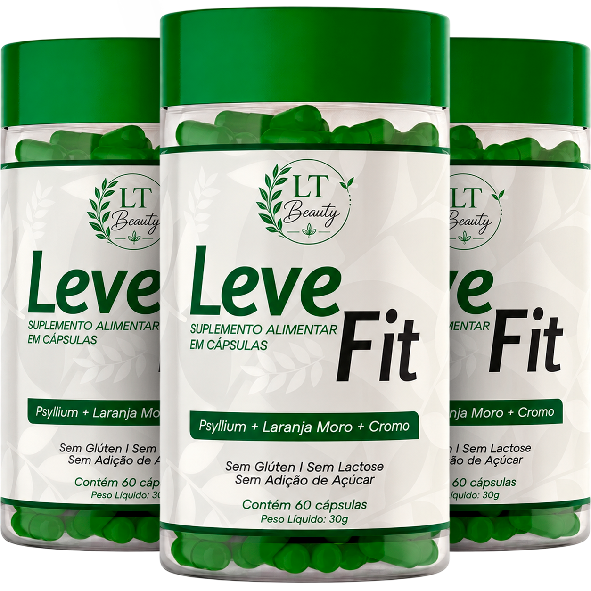
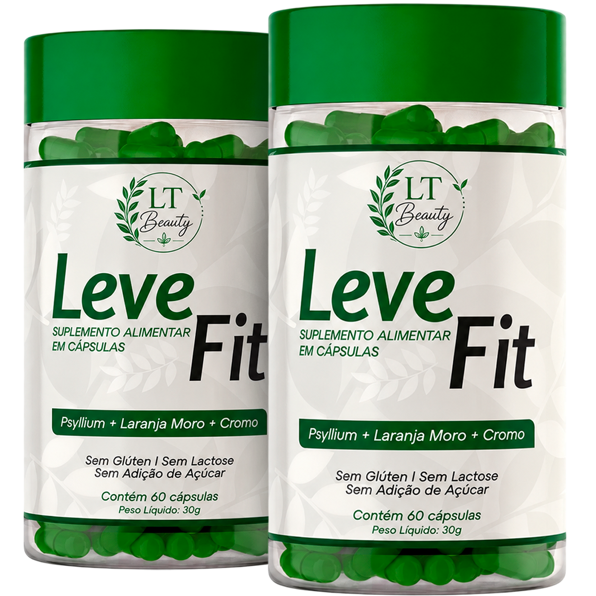
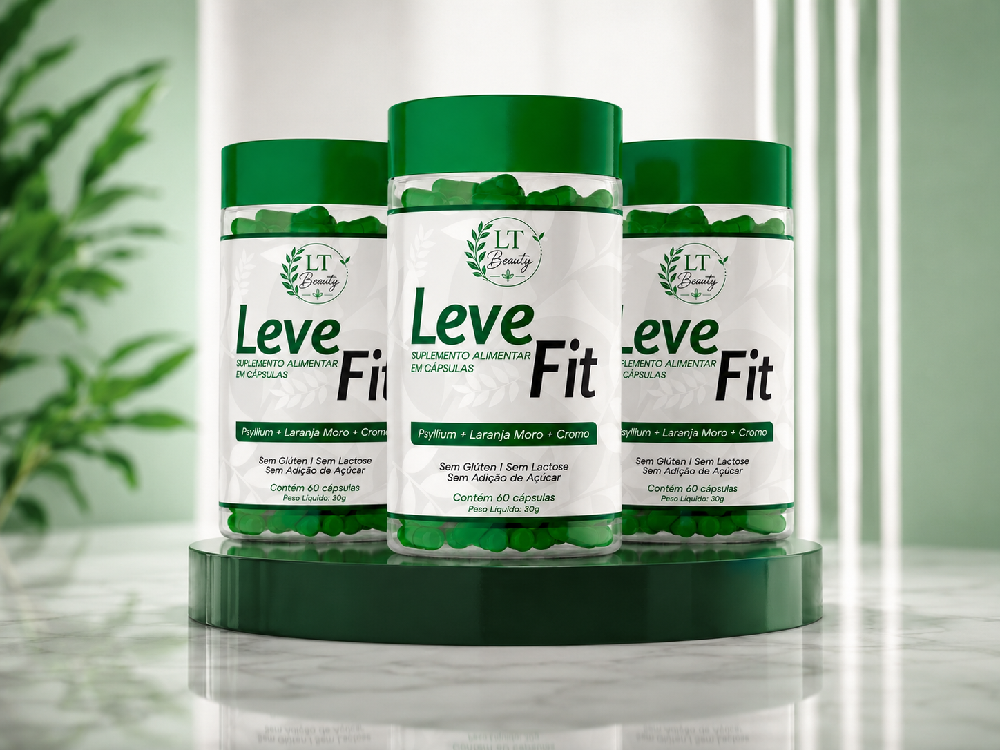

LT Beauty apresenta
Sua rotina, mais leve.
Leve Fit é um suplemento alimentar em cápsulas com Psyllium, Laranja Moro e Cromo, desenvolvido para acompanhar uma rotina mais equilibrada, prática e saudável.
Suplemento alimentar. Não é medicamento.

Vida real, cuidado possível
Cuidar da rotina nem sempre é fácil.
Entre compromissos, alimentação corrida e falta de tempo, manter hábitos equilibrados pode parecer complicado. É por isso que pequenas escolhas diárias fazem diferença.
-
Rotina corrida
Quando o dia passa rápido, o cuidado pessoal acaba ficando para depois.
-
Falta de constância
Criar uma rotina saudável exige praticidade e escolhas simples.
-
Busca por equilíbrio
Mais do que mudanças radicais, seu dia pede cuidado possível, consciente e contínuo.
Menos excesso Mais constância.
Seu ritual de cuidado
Leve Fit: O diferencial está na fórmula.
O Leve Fit foi desenvolvido com ingredientes cuidadosamente selecionados para auxiliar mulheres que desejam mais saciedade e equilíbrio na rotina alimentar.
Auxilia na sensação de saciedade
Ajuda a reduzir aquela vontade constante de beliscar
Contribui para uma rotina alimentar mais organizada
Fácil de incluir no dia a dia
Desenvolvido para acompanhar seus hábitos saudáveis
Cuidado que cabe no seu dia
Por que incluir Leve Fit na sua rotina?
Uma fórmula prática, limpa e alinhada com quem busca equilíbrio no dia a dia.
Cuidado diário
Apoia sua rotina saudável
Uma escolha simples para complementar hábitos equilibrados.
Formato prático
Praticidade em cápsulas
Fácil de consumir e levar para qualquer lugar.
Ingredientes
3 ativos em 1 cápsula
Psyllium, Laranja Moro e Cromo em combinação.
Fórmula limpa
Escolhas mais conscientes
Sem glúten, sem lactose e sem adição de açúcar.
Transparência na fórmula
Uma combinação pensada para o seu dia.
Conheça os principais componentes da fórmula Leve Fit.
Psyllium
Uma fibra vegetal muito utilizada em suplementos alimentares e em rotinas de alimentação equilibrada.

Laranja Moro
Ingrediente presente em fórmulas voltadas a pessoas que valorizam hábitos saudáveis.

Cromo
Mineral utilizado em suplementos alimentares e associado a rotinas de cuidado nutricional.
Ritual simples
Como incluir na rotina
Um cuidado simples para acompanhar seus hábitos diários.

-
01
Siga a recomendação do rótulo
Consuma conforme as instruções da embalagem ou orientação de um profissional habilitado.
-
02
Combine com uma rotina equilibrada
Inclua o Leve Fit em hábitos saudáveis, alimentação equilibrada e cuidado diário.
-
03
Mantenha constância
Pequenas escolhas repetidas todos os dias ajudam a construir uma rotina mais leve.
- Não exceda a recomendação diária indicada no rótulo.
Experiências de cuidado
Leveza que se sente na rotina.
tô usando faz 3 semanas e já percebi diferença na digestão. barriga menos estufada, a sensação de inchaço q eu tinha toda tarde sumiu bastante. to gostando sim
minha maior dificuldade era a fome entre as refeições. depois de uns dias usando ficou muito mais fácil não beliscar à toa. não é milagre mas ajudou pra caramba na consistência
comecei sem muita expectativa e fui sendo surpreendida. depois de 2 semanas tava sentindo o abdômen menos pesado, menos gases, menos inchaço. to renovando já
já tentei vários suplementos e parava no meio. esse eu consigo tomar todo dia sem esforço. a diferença no intestino veio devagar mas veio. tô bem feliz com o resultado
perdi 2kg no primeiro mês junto com alimentação mais cuidada. a saciedade q ele dá ajudou demais a não exagerar nas refeições. não esperava esse resultado tão logo
eu vivia com barriga estufada, principalmente à tarde. depois de umas 2 semanas usando percebi muito menos inchaço. pra mim esse foi o resultado mais claro e mais rápido
3 meses usando e não parei. o que me convenceu foi a leveza que fui sentindo aos poucos — menos inchaço, intestino funcionando melhor. nada da noite pro dia mas o resultado foi real
o psyllium dá uma saciedade boa mesmo. entre uma refeição e outra fico bem mais tranquila, sem ficar olhando pro armário a cada hora kkkk. resultado bem bacana
sempre tive intestino preguiçoso. desde q comecei faz 1 mês tá funcionando muito mais regular. ainda fico surpresa rsrs. produto bom de verdade
comecei pra ajudar no controle do peso e fui percebendo outros resultados junto — intestino regulando, menos inchada, mais leve. vai vindo aos poucos, mas vem
a barriga desinflou bastante nas primeiras semanas. eu já sabia q ia demorar pra ver resultado de peso, mas o inchaço foi o 1° sinal e foi rápido. muito bom
minha dificuldade era com doce, aquela vontade lá pelas 15h. depois de uns dias usando diminuiu bastante. não desapareceu, mas ficou administrável. to feliz com isso
uso junto com caminhada e alimentação equilibrada. já faz 6 semanas e tô 3kg mais leve. sei q não é só o suplemento mas ele ajudou bastante a manter a constância
digestão melhorou e o inchaço que eu tinha todo dia sumiu bastante. não é transformação da noite pro dia, foi progressivo. mas deu resultado sim, tô satisfeita
Escolha seu cuidado
Sua rotina mais leve começa aqui.
Garanta seu Leve Fit e inclua esse cuidado no seu dia a dia.

1 Frasco
Ideal para conhecer o Leve Fit.

3 Frascos
Para quem quer constância e resultado duradouro.
- 3 meses de suplementação
- Sem glúten e sem lactose
- Frete Grátis para todo Brasil

2 Frascos
Para manter a rotina por mais tempo.
Escolha consciente
Por que escolher Leve Fit?
Uma proposta prática, limpa e alinhada com quem valoriza cuidado diário.
Escolher meu kit ↘Informação traz segurança
Dúvidas frequentes
Respostas rápidas para você escolher com mais tranquilidade.
O que é o Leve Fit?
Leve Fit é um suplemento alimentar em cápsulas com Psyllium, Laranja Moro e Cromo, desenvolvido para fazer parte de uma rotina equilibrada e saudável.
Leve Fit é medicamento?
Não. Leve Fit é um suplemento alimentar. Ele não é medicamento e não deve ser utilizado para tratar, prevenir ou curar doenças.
Quantas cápsulas vêm no frasco?
Cada frasco contém 60 cápsulas.
O produto tem glúten, lactose ou açúcar?
Leve Fit é sem glúten, sem lactose e não possui adição de açúcar.
Como devo consumir?
Consuma conforme a recomendação do rótulo ou orientação de um profissional habilitado. Não exceda a recomendação diária indicada.
Em quanto tempo verei resultados?
Resultados podem variar de pessoa para pessoa. O Leve Fit deve estar associado a uma alimentação equilibrada, hidratação e hábitos de vida saudáveis.
Quem deve consultar um profissional antes de usar?
Gestantes, lactantes, crianças, idosos, pessoas com doenças ou em uso de medicamentos devem consultar um profissional de saúde antes do consumo.
Como funciona a entrega?
Insira seu CEP no checkout para visualizar o prazo de entrega.
Uma escolha para repetir
Comece hoje uma rotina mais leve, prática e consciente.
Inclua o Leve Fit no seu dia a dia e transforme o cuidado com você em uma escolha simples.
Garantir meu Leve Fit
Este produto é um suplemento alimentar. Não é medicamento. Não deve ser utilizado para tratar, prevenir ou curar doenças. Gestantes, lactantes e pessoas em uso de medicamentos devem consultar um profissional antes do consumo.